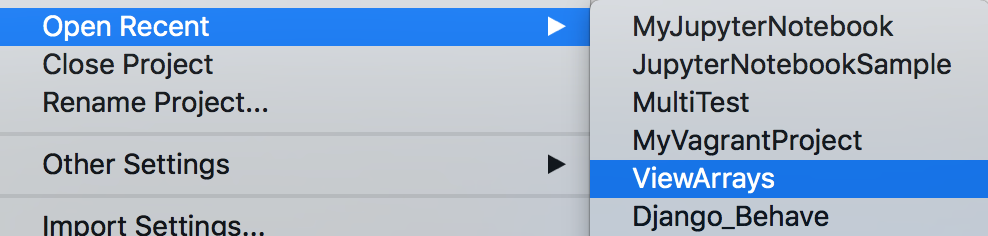
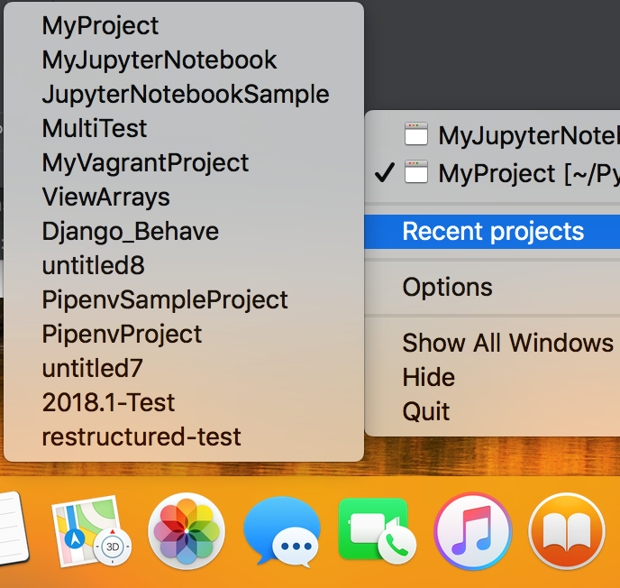

To open again one of the recent projects, use Reopen(on Windows and Linux)/Open Recent(on MacOS) on the File menu:

Another way to reopen a project on macOS is to right-click the &productName; icon on the task bar:
